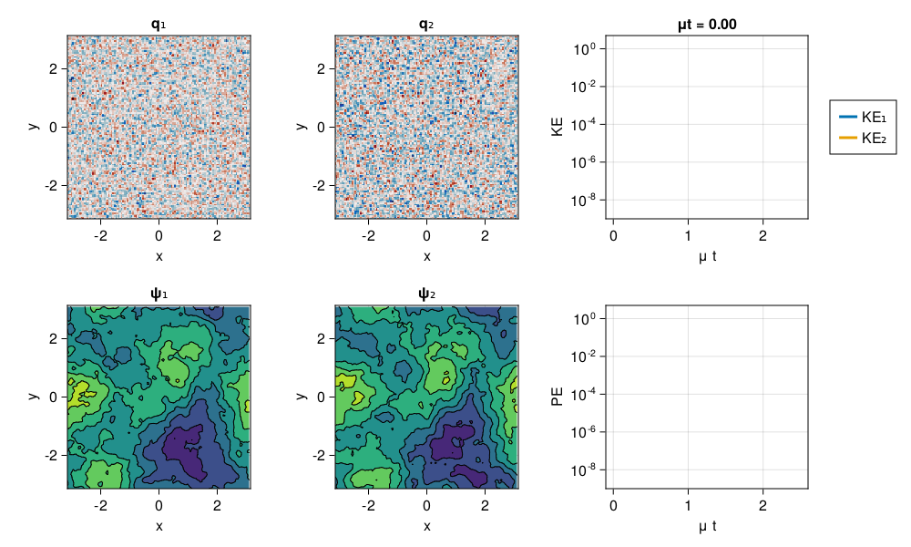

Phillips model of Baroclinic Instability
A simulation of the growth of barolinic instability in the Phillips 2-layer model when we impose a vertical mean flow shear as a difference $\Delta U$ in the imposed, domain-averaged, zonal flow at each layer.
Install dependencies
First let's make sure we have all required packages installed.
using Pkg
pkg"add GeophysicalFlows, CairoMakie, Printf"Let's begin
Let's load GeophysicalFlows.jl and some other packages we need.
using GeophysicalFlows, CairoMakie, Printf
using Random: seed!Choosing a device: CPU or GPU
dev = CPU() # Device (CPU/GPU)Numerical parameters and time-stepping parameters
n = 128 # 2D resolution = n²
stepper = "FilteredRK4" # timestepper
dt = 2.5e-3 # timestep
nsteps = 20000 # total number of time-steps
nsubs = 50 # number of time-steps for plotting (nsteps must be multiple of nsubs)Physical parameters
L = 2π # domain size
μ = 5e-2 # bottom drag
β = 5 # the y-gradient of planetary PV
nlayers = 2 # number of layers
f₀, g = 1, 1 # Coriolis parameter and gravitational constant
H = [0.2, 0.8] # the rest depths of each layer
ρ = [4.0, 5.0] # the density of each layer
U = zeros(nlayers) # the imposed mean zonal flow in each layer
U[1] = 1.0
U[2] = 0.0Problem setup
We initialize a Problem by providing a set of keyword arguments. We use stepper = "FilteredRK4". Filtered timesteppers apply a wavenumber-filter at every time-step that removes enstrophy at high wavenumbers and, thereby, stabilize the problem, despite that we use the default viscosity coefficient ν=0.
prob = MultiLayerQG.Problem(nlayers, dev; nx=n, Lx=L, f₀, g, H, ρ, U, μ, β,
dt, stepper, aliased_fraction=0)and define some shortcuts.
sol, clock, params, vars, grid = prob.sol, prob.clock, prob.params, prob.vars, prob.grid
x, y = grid.x, grid.ySetting initial conditions
Our initial condition is some small-amplitude random noise. We smooth our initial condidtion using the timestepper's high-wavenumber filter.
device_array() function returns the array type appropriate for the device, i.e., Array for dev = CPU() and CuArray for dev = GPU().
seed!(1234) # reset of the random number generator for reproducibility
q₀ = 1e-2 * device_array(dev)(randn((grid.nx, grid.ny, nlayers)))
q₀h = prob.timestepper.filter .* rfft(q₀, (1, 2)) # apply rfft only in dims=1, 2
q₀ = irfft(q₀h, grid.nx, (1, 2)) # apply irfft only in dims=1, 2
MultiLayerQG.set_q!(prob, q₀)Diagnostics
Create Diagnostics – energies function is imported at the top.
E = Diagnostic(MultiLayerQG.energies, prob; nsteps)
diags = [E] # A list of Diagnostics types passed to "stepforward!" will be updated every timestep.Output
We choose folder for outputing .jld2 files and snapshots (.png files).
filepath = "."
plotpath = "./plots_2layer"
plotname = "snapshots"
filename = joinpath(filepath, "2layer.jld2")Do some basic file management
if isfile(filename); rm(filename); end
if !isdir(plotpath); mkdir(plotpath); endAnd then create Output
get_sol(prob) = prob.sol # extracts the Fourier-transformed solution
function get_u(prob)
sol, params, vars, grid = prob.sol, prob.params, prob.vars, prob.grid
@. vars.qh = sol
streamfunctionfrompv!(vars.ψh, vars.qh, params, grid)
@. vars.uh = -im * grid.l * vars.ψh
invtransform!(vars.u, vars.uh, params)
return vars.u
end
out = Output(prob, filename, (:sol, get_sol), (:u, get_u))Visualizing the simulation
We create a figure using Makie's Observables that plots the potential vorticity field and the evolution of energy and enstrophy. Note that when plotting, we decorate the variable to be plotted with Array() to make sure it is brought back on the CPU when vars live on the GPU.
Lx, Ly = grid.Lx, grid.Ly
title_KE = Observable(@sprintf("μt = %.2f", μ * clock.t))
q₁ = Observable(Array(vars.q[:, :, 1]))
ψ₁ = Observable(Array(vars.ψ[:, :, 1]))
q₂ = Observable(Array(vars.q[:, :, 2]))
ψ₂ = Observable(Array(vars.ψ[:, :, 2]))
function compute_levels(maxf, nlevels=8)
# -max(|f|):...:max(|f|)
levelsf = @lift collect(range(-$maxf, stop = $maxf, length=nlevels))
# only positive
levelsf⁺ = @lift collect(range($maxf/(nlevels-1), stop = $maxf, length=Int(nlevels/2)))
# only negative
levelsf⁻ = @lift collect(range(-$maxf, stop = -$maxf/(nlevels-1), length=Int(nlevels/2)))
return levelsf, levelsf⁺, levelsf⁻
end
maxψ₁ = Observable(maximum(abs, vars.ψ[:, :, 1]))
maxψ₂ = Observable(maximum(abs, vars.ψ[:, :, 2]))
levelsψ₁, levelsψ₁⁺, levelsψ₁⁻ = compute_levels(maxψ₁)
levelsψ₂, levelsψ₂⁺, levelsψ₂⁻ = compute_levels(maxψ₂)
KE₁ = Observable(Point2f[(μ * E.t[1], E.data[1][1][1])])
KE₂ = Observable(Point2f[(μ * E.t[1], E.data[1][1][2])])
PE = Observable(Point2f[(μ * E.t[1], E.data[1][2])])
fig = Figure(resolution=(1000, 600))
axis_kwargs = (xlabel = "x",
ylabel = "y",
aspect = 1,
limits = ((-Lx/2, Lx/2), (-Ly/2, Ly/2)))
axq₁ = Axis(fig[1, 1]; title = "q₁", axis_kwargs...)
axψ₁ = Axis(fig[2, 1]; title = "ψ₁", axis_kwargs...)
axq₂ = Axis(fig[1, 2]; title = "q₂", axis_kwargs...)
axψ₂ = Axis(fig[2, 2]; title = "ψ₂", axis_kwargs...)
axKE = Axis(fig[1, 3],
xlabel = "μ t",
ylabel = "KE",
title = title_KE,
yscale = log10,
limits = ((-0.1, 2.6), (1e-9, 5)))
axPE = Axis(fig[2, 3],
xlabel = "μ t",
ylabel = "PE",
yscale = log10,
limits = ((-0.1, 2.6), (1e-9, 5)))
heatmap!(axq₁, x, y, q₁; colormap = :balance)
heatmap!(axq₂, x, y, q₂; colormap = :balance)
contourf!(axψ₁, x, y, ψ₁;
levels = levelsψ₁, colormap = :viridis, extendlow = :auto, extendhigh = :auto)
contour!(axψ₁, x, y, ψ₁;
levels = levelsψ₁⁺, color=:black)
contour!(axψ₁, x, y, ψ₁;
levels = levelsψ₁⁻, color=:black, linestyle = :dash)
contourf!(axψ₂, x, y, ψ₂;
levels = levelsψ₂, colormap = :viridis, extendlow = :auto, extendhigh = :auto)
contour!(axψ₂, x, y, ψ₂;
levels = levelsψ₂⁺, color=:black)
contour!(axψ₂, x, y, ψ₂;
levels = levelsψ₂⁻, color=:black, linestyle = :dash)
ke₁ = lines!(axKE, KE₁; linewidth = 3)
ke₂ = lines!(axKE, KE₂; linewidth = 3)
Legend(fig[1, 4], [ke₁, ke₂,], ["KE₁", "KE₂"])
lines!(axPE, PE; linewidth = 3)
fig
Time-stepping the Problem forward
Finally, we time-step the Problem forward in time.
startwalltime = time()
frames = 0:round(Int, nsteps / nsubs)
record(fig, "multilayerqg_2layer.mp4", frames, framerate = 18) do j
if j % (1000 / nsubs) == 0
cfl = clock.dt * maximum([maximum(vars.u) / grid.dx, maximum(vars.v) / grid.dy])
log = @sprintf("step: %04d, t: %.1f, cfl: %.2f, KE₁: %.3e, KE₂: %.3e, PE: %.3e, walltime: %.2f min",
clock.step, clock.t, cfl, E.data[E.i][1][1], E.data[E.i][1][2], E.data[E.i][2][1], (time()-startwalltime)/60)
println(log)
end
q₁[] = vars.q[:, :, 1]
ψ₁[] = vars.ψ[:, :, 1]
q₂[] = vars.q[:, :, 2]
ψ₂[] = vars.ψ[:, :, 2]
maxψ₁[] = maximum(abs, vars.ψ[:, :, 1])
maxψ₂[] = maximum(abs, vars.ψ[:, :, 2])
KE₁[] = push!(KE₁[], Point2f(μ * E.t[E.i], E.data[E.i][1][1]))
KE₂[] = push!(KE₂[], Point2f(μ * E.t[E.i], E.data[E.i][1][2]))
PE[] = push!(PE[] , Point2f(μ * E.t[E.i], E.data[E.i][2]))
title_KE[] = @sprintf("μ t = %.2f", μ * clock.t)
stepforward!(prob, diags, nsubs)
MultiLayerQG.updatevars!(prob)
endstep: 0000, t: 0.0, cfl: 0.00, KE₁: 1.057e-08, KE₂: 4.999e-08, PE: 3.110e-09, walltime: 0.00 min
step: 1000, t: 2.5, cfl: 0.00, KE₁: 4.790e-08, KE₂: 4.955e-08, PE: 6.252e-08, walltime: 0.17 min
step: 2000, t: 5.0, cfl: 0.00, KE₁: 1.611e-07, KE₂: 8.767e-08, PE: 1.824e-07, walltime: 0.31 min
step: 3000, t: 7.5, cfl: 0.00, KE₁: 6.691e-07, KE₂: 2.782e-07, PE: 7.464e-07, walltime: 0.45 min
step: 4000, t: 10.0, cfl: 0.00, KE₁: 3.107e-06, KE₂: 1.241e-06, PE: 3.361e-06, walltime: 0.59 min
step: 5000, t: 12.5, cfl: 0.00, KE₁: 1.570e-05, KE₂: 6.251e-06, PE: 1.685e-05, walltime: 0.72 min
step: 6000, t: 15.0, cfl: 0.00, KE₁: 8.230e-05, KE₂: 3.282e-05, PE: 8.810e-05, walltime: 0.86 min
step: 7000, t: 17.5, cfl: 0.01, KE₁: 4.412e-04, KE₂: 1.760e-04, PE: 4.723e-04, walltime: 1.02 min
step: 8000, t: 20.0, cfl: 0.02, KE₁: 2.394e-03, KE₂: 9.554e-04, PE: 2.564e-03, walltime: 1.18 min
step: 9000, t: 22.5, cfl: 0.05, KE₁: 1.274e-02, KE₂: 5.083e-03, PE: 1.365e-02, walltime: 1.33 min
step: 10000, t: 25.0, cfl: 0.09, KE₁: 5.764e-02, KE₂: 2.314e-02, PE: 6.095e-02, walltime: 1.49 min
step: 11000, t: 27.5, cfl: 0.12, KE₁: 1.720e-01, KE₂: 7.441e-02, PE: 1.710e-01, walltime: 1.64 min
step: 12000, t: 30.0, cfl: 0.19, KE₁: 3.204e-01, KE₂: 1.522e-01, PE: 3.567e-01, walltime: 1.79 min
step: 13000, t: 32.5, cfl: 0.23, KE₁: 3.819e-01, KE₂: 2.204e-01, PE: 3.942e-01, walltime: 1.92 min
step: 14000, t: 35.0, cfl: 0.30, KE₁: 4.390e-01, KE₂: 3.152e-01, PE: 4.753e-01, walltime: 2.05 min
step: 15000, t: 37.5, cfl: 0.27, KE₁: 5.285e-01, KE₂: 3.980e-01, PE: 6.448e-01, walltime: 2.18 min
step: 16000, t: 40.0, cfl: 0.31, KE₁: 5.657e-01, KE₂: 4.813e-01, PE: 6.384e-01, walltime: 2.30 min
step: 17000, t: 42.5, cfl: 0.30, KE₁: 5.449e-01, KE₂: 5.176e-01, PE: 5.810e-01, walltime: 2.42 min
step: 18000, t: 45.0, cfl: 0.31, KE₁: 5.547e-01, KE₂: 5.822e-01, PE: 5.594e-01, walltime: 2.53 min
step: 19000, t: 47.5, cfl: 0.28, KE₁: 5.410e-01, KE₂: 6.639e-01, PE: 5.192e-01, walltime: 2.64 min
step: 20000, t: 50.0, cfl: 0.26, KE₁: 5.316e-01, KE₂: 6.543e-01, PE: 5.425e-01, walltime: 2.75 min
Save
Finally, we can save, e.g., the last snapshot via
savename = @sprintf("%s_%09d.png", joinpath(plotpath, plotname), clock.step)
savefig(savename)This page was generated using Literate.jl.